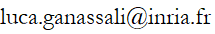

Luca Ganassali
Welcome to my personal webpage.
Still in progress...
About me
I am a first-year Ph.D. student under the supervision of Laurent Massoulié
and Marc Lelarge. I work at INRIA Paris, in the
DYOGENE team, which is a joint team between INRIA Paris and ENS Paris.
Contact

INRIA, 3rd floor, Office C321,
2 rue Simone Iff,
75012 Paris.
Publications and preprints
L.Ganassali, L. Massoulié. From tree matching to sparse graph alignment, 2020, Conference on Learning Theory (COLT) 2020.
[arXiv] [Show Abstract]
Abstract:
In this paper we consider alignment of sparse graphs, for which we introduce the Neighborhood Tree Matching Algorithm (NTMA). For correlated
Erdős-Rényi random graphs, we prove that the algorithm returns -- in polynomial time -- a positive fraction of correctly matched vertices,
and a vanishing fraction of mismatches. This result holds with average degree of the graphs in O(1) and correlation parameter s that can be
bounded away from 1, conditions under which random graph alignment is particularly challenging. As a byproduct of the analysis we introduce a
matching metric between trees and characterize it for several models of correlated random trees. These results may be of independent interest,
yielding for instance efficient tests for determining whether two random trees are correlated or independent.
L.Ganassali, M. Lelarge, L. Massoulié. Spectral alignment of correlated Gaussian random matrices, 2019,
preprint.
[arXiv] [Show Abstract]
Abstract:
In this paper we analyze a simple method (EIG1) for the problem of matrix alignment, consisting in aligning their leading eigenvectors: given A and B, we
compute v1 and v′1 two leading eigenvectors of A and B. The algorithm returns a permutation Π^ such that the rank of the coordinate Π^(i) in v1 is the
rank of the coordinate i in v′1 (up to the sign of v′1). We consider a model where A belongs to the Gaussian Orthogonal Ensemble (GOE), and B=ΠT(A+σH)Π,
where Π is a permutation matrix and H is an independent copy of A. We show the following 0-1 law: under the condition σN7/6+ϵ→0, the EIG1 method recovers
all but a vanishing part of the underlying permutation Π. When σN7/6−ϵ→∞, this algorithm cannot recover more than o(N) correct matches. This result gives an
understanding of the simplest and fastest spectral method for matrix alignment (or complete weighted graph alignment), and involves proof methods and
techniques which could be of independent interest.
Conferences, workshops